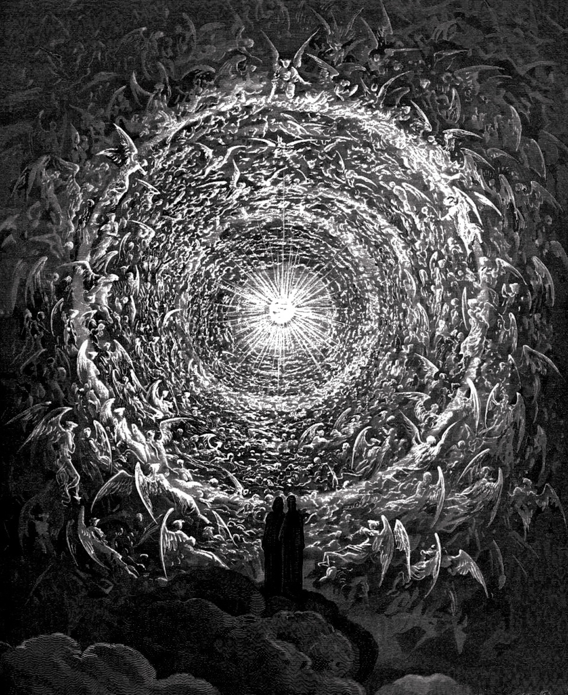

Mario César Sánchez Villa 
Historia de la Ciencia
Ejercicio independiente
Historiador especializado en historia de la ciencia y de la medicina en los siglos XVIII y XIX. Doctor en Historia Contemporánea por la UCM, ejercí como investigador en el Centro de Ciencias Humanas y Sociales del CSIC y (cosas de la vida) ahora me dedico a la historia de modo independiente, intentando conjugarla con el desarrollo de nuevas tecnologías en el ámbito de la comunicación digital.
La mayor parte de mi formación en el campo de desarrollo ha sido autodidacta, con tan sólo 12 años comencé a interesarme por la progrmación en entornos Ms-Dos, posteriormente aprendí fundamentos de programación en Clipper, pero no ha sido hasta tiempo reciente que me he decantado por conocer los fundamentos de html y Java Script, primero por simple curiosidad y más tarde como respuesta a las posibilidades que la programación ofrece de cara a la difusión científica dentro de mi disciplina, así como a obtener una cierta distinción en un campo que, como la investigación histórica, tiende en ocasiones a mostrar renuencia hacia las nuevas tecnologías. En este segundo acercamiento al mundo digital he llevado a cabo algunos cursos de carácter introductorio tanto a lenguajes de programación como a difusión y presentación de contenidos en entronos web